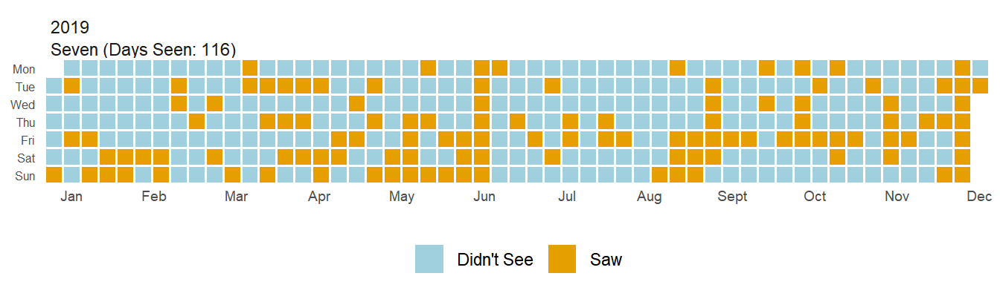
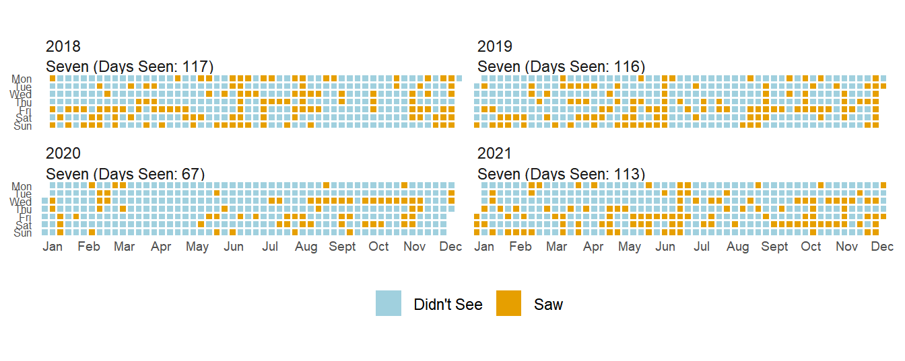
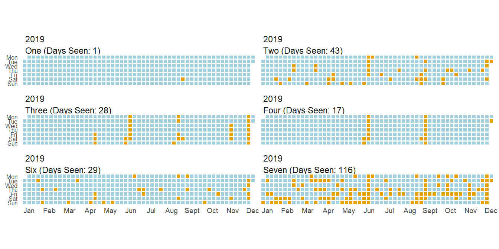
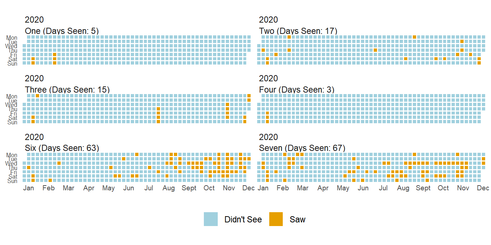
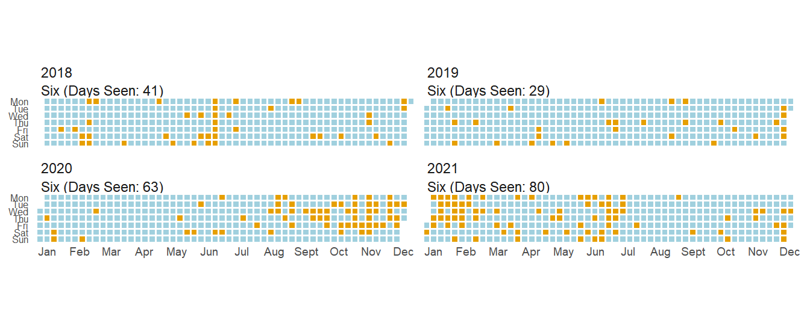
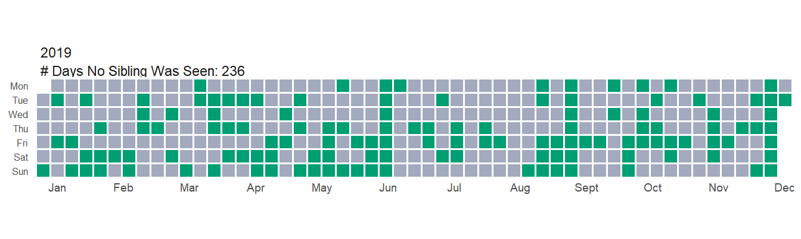
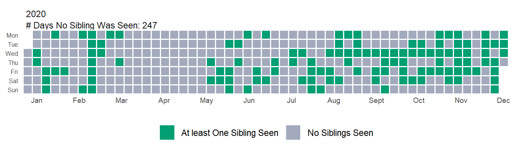
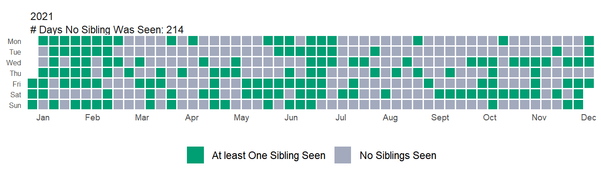

| date | answer_number | unit | answer_text |
|---|---|---|---|
| 2017-04-25 00:00:00 UTC | 0 | Units | Seven, Two |
| 2017-04-26 00:00:00 UTC | 0 | Units | Seven, Two |
| 2017-04-27 00:00:00 UTC | 0 | Units | Seven |
| 2017-04-28 00:00:00 UTC | 0 | Units | Seven, Two |
| 2017-04-29 00:00:00 UTC | 0 | Units | Seven |
| 2017-04-30 00:00:00 UTC | 0 | Units | Seven, Six, Two |
Several years ago I started using a service called AskMeEvery to track various little aspects of my life– how much I read that day, how much water I drank, etc. There are certainly better ways to collect this data today, but ~10 years ago AskMeEvery offered a simple solution. You input a question and AskMeEvery will email you the question at whatever frequency you specify. Then you just respond to that email with your answer. All that data is stored in your account and you can export the data to a csv if you ever want to play around with your data.
Well, today I do want to play around with that data, specifically the data I collected tracking which of my many siblings I saw each day. I have six siblings spread over a good portion of the country. The amount I see them in normal years varies a ton. Add COVID into the mix and who knows what happens. So let’s find out–how often do I see each of my siblings? Has that changed during COVID? Let’s dive in!
Data Import and Cleaning
As I said before, getting the data is as easy as clicking export to csv file. The data itself is well formatted, but some tidying is necessary. Initially I have date, unit, answer text and answer number variables.
Answer number and unit don’t really contain any information so I get rid of them. Date is a date-time variable, but it is in character format initially. I convert it to a date class(since I didn’t record the time I saw a sibling) and then I check for missing dates(ie did I forget to respond to an email).
Code
# remove unneeded variables and format date-time as a date
clean_data <- raw_data %>%
select(date, answer_text)%>%
mutate(date = as.Date(date))
# double checking and making sure every date is present
dates <- as.Date(c("2017-04-25", "2022-01-03"))
date_range <- seq(min(dates), max(dates), by = 1)
#returns any date missing
date_range[!date_range %in% clean_data$date][1] "2018-09-07" "2018-12-31" "2020-01-24" "2020-06-15" "2021-02-01"Turns out I have 5 days that are missing. I’ll deal with those by adding a missing value to those dates so that I have an unbroken time series.
Answer text is a character vector of all the siblings I saw on a day separated by commas. I want to split this variable so that I can turn my current data format into a long format data frame. From data exploration I know that I have a couple data entry errors and some unique values–eg ‘All’ for days I saw every sibling and ‘None’ for days I saw none. I can do all this cleaning in the couple steps shown below. I suppose I should also mention that I anonymized the names in the data set–sadly my siblings do not have numbers for names.
Code
clean_data <- clean_data %>%
# replace 'All' with the 6 individual sibling names
mutate(answer_text = ifelse(answer_text == "All", "One, Two, Three, Four, Six, Seven", answer_text),
answer_text = ifelse(answer_text == "No", "None", answer_text)) #correct typos in data entry
# generate a df with my missing dates and a 'Not recorded' value.
missing_days <- tibble(
date = as.Date(c("2018-09-07", "2018-12-31", "2020-01-24", "2020-06-15", "2021-02-01")),
answer_text = rep("Not Recorded", 5)
)
# bind my original data set with the missing_days df I just created and put dates back in order
full_data <- bind_rows(clean_data, missing_days)%>%
arrange(date)
# Splitting answer_text into long format
long_data <- full_data %>%
mutate(answer_text = trimws(answer_text))%>%
separate_rows(answer_text, sep = ",")%>%
mutate(answer_text = trimws(answer_text))
knitr::kable(head(long_data))%>%
kableExtra::kable_styling(position = 'center')| date | answer_text |
|---|---|
| 2017-04-25 | Seven |
| 2017-04-25 | Two |
| 2017-04-26 | Seven |
| 2017-04-26 | Two |
| 2017-04-27 | Seven |
| 2017-04-28 | Seven |
Now I have a long data frame that has an entry for each sibling I saw on each day. So on 2017-04-25, I saw Seven and Two, but no other siblings. For the waffle plot I’m going to build, it turns out it is easier if I have a dummy variable indicating if I saw each sibling on every day. The easiest way I know to do this is to pivot my data wide and then pivot it back long, but I’d love to hear a more concise way if anyone feels like sharing.
Code
dummy_variable_data_wide <- long_data %>%
mutate(dummy = 1)%>%
pivot_wider(names_from = answer_text, values_from = dummy, values_fill = 0 )
dummy_variable_data_long <- dummy_variable_data_wide %>%
pivot_longer(cols = c("One", "Two", "Three", "Four", "Six", "Seven", "None"),
names_to = "Sibling",
values_to = "present")
knitr::kable(head(dummy_variable_data_long))%>%
kableExtra::kable_styling(position = 'center')| date | Not Recorded | Sibling | present |
|---|---|---|---|
| 2017-04-25 | 0 | One | 0 |
| 2017-04-25 | 0 | Two | 1 |
| 2017-04-25 | 0 | Three | 0 |
| 2017-04-25 | 0 | Four | 0 |
| 2017-04-25 | 0 | Six | 0 |
| 2017-04-25 | 0 | Seven | 1 |
So as you can see, I now have six records per day–one for each sibling, with a dummy variable 1/0 indicating whether I saw them. Now I can get to the heart of what I want to do–make a waffle plot!
Delicious Waffle Plots
Waffle plots are, in my opinion, a great way to communicate information about categorical variables. In my case, I want to be able to see how often I saw a sibling over the course of an entire year. The base geom comes straight from ggplot and it’s really just formatting tweaks which give it that waffle flavor. It is mainly a matter of making sure your variables are the correct type(eg factor/numeric) and then using a bunch of formatting tweaks to geom_tile. The key parts were scaling the x-axis correctly and then using the coord_equal layer to make sure my tiles are shaped into squares rather than weird rectangles.
Building the Waffle Plot Function
Code
plot_waffle <- function(date_start = "2020-01-01", date_end = "2020-12-31",
sibling = 'Seven', long_data = dummy_variable_data_long,
hide_legend = FALSE){
# shortcut so you don't have to type every sibling name if you want all of them
if(sibling == "All"){sibling = c("One", "Two", "Three", "Four", "Six", "Seven")}
# plot_data filters to the requested data and then generates the needed time
# components for plotting
plot_data <- long_data %>%
# what period of time do you want to look at
filter(between(date, as.Date(date_start), as.Date(date_end)),
Sibling %in% sibling)%>% # which siblings do you want to look at
# break date up into week, day-of-week(day), year components--base plot is week on x-axis and
# day-of-week on y-axis
mutate(week = as.integer(format(date, "%W")),
day = factor(weekdays(date, TRUE),
levels = rev(c("Mon", "Tue", "Wed", "Thu",
"Fri", "Sat", "Sun"))),
# present and Sibling need to be factors or else ggplot does strange things
present = as.factor(present),
year = as.integer(format(date, "%Y")),
Sibling = factor(as.factor(Sibling), levels = c("One", "Two", "Three", "Four", "Six", "Seven")))
# days_seen is a hacky way to get totals for the number of days I see each sibling in the
# specified time period.
days_seen <- plot_data %>%
group_by(year, Sibling)%>%
summarise(total = sum(as.integer(present)-1))
# function to generate a text string to use with ggplot2 labeller function
# as_labeller will transform appender to a labeller function to be used by labeller in facet_wrap
# to label the facets
appender <- function(string) paste0(string, " (Days Seen: ", days_seen$total, ")")
if(hide_legend){
lp <- "none"
}else{
lp <- "bottom"
}
base_plot <- plot_data %>%
ggplot(aes(x = week, y = day, fill = present))+
# color and size control the grid/waffle appearance. Larger values of size result
# in more whitespace between and smaller squares.
geom_tile(color = 'white', size = .7, alpha = 1)+
facet_wrap(year ~ Sibling, ncol = 2,
# see https://ggplot2.tidyverse.org/reference/labeller.html for info on how this works
labeller = labeller(Sibling = as_labeller(appender)))+
# x 52 weeks long. Divide by 12 to break into months and then generate month labels.
scale_x_continuous(
expand = c(0,0),
breaks = seq(1, 52, length = 12),
labels = c(
"Jan", "Feb", "Mar", "Apr", "May", "Jun",
"Jul", "Aug", "Sept", "Oct", "Nov", "Dec"
)
)+
# key layer to entire plot. Default ratio = 1 ensures 1 unit on x-axis is the same length
# as 1 unit on y-axis. In other words, it makes a square.
coord_equal(ratio = 1)+
theme_minimal()+
theme(
legend.position = lp,
axis.title.y = element_blank(),
axis.title.x = element_blank(),
axis.text.y = element_text(size = 6),
axis.text.x = element_text(size = 7, vjust = 3),
# changes the layer underneath the squares to be white. Means columns with missing squares
# don't have grey spots.
strip.background = element_rect(fill = 'white', color = 'white'),
strip.text = element_text(hjust = 0, vjust = -1),
strip.text.x = element_text(margin = margin(0, 1, 1, 1, "mm")),
strip.placement = 'outside',
axis.ticks = element_blank(),
panel.grid = element_blank(),
)+
scale_fill_manual(name = NULL, values = c("#a0d0de", "#E69F00"),
labels = c("Didn't See", "Saw"))
#ggthemes::scale_fill_few(name = NULL, palette = 'Light',
#labels = c("Didn't See", "Saw"))
if(sibling[1] == 'None'){
appender <- function(string) paste0("# Days No Sibling Was Seen: ", days_seen$total)
base_plot +
facet_wrap(year ~ Sibling, ncol = 2,
labeller = labeller(Sibling = as_labeller(appender)))+
scale_fill_manual(name = NULL, values = c("#009E73", "#a3aabd"),
labels = c("At least One Sibling Seen", "No Siblings Seen"))
}else{
base_plot
}
}How Often Do I See My Siblings
So what does this all end up looking like? Let’s take a look at how often I saw Seven before COVID started.
Code
plot_waffle(date_start = '2019-01-01', date_end = "2019-12-31",
sibling = c("Seven"),
long_data = dummy_variable_data_long)
Pretty snazzy, huh? My favorite thing about waffle plots is how easy to interpret I find them. I can look at this plot and immediately recognize periods of time when I saw Seven and quickly realize ‘oh, this must have been Thanksgiving’. The real power here comes from faceting though. What if I want to see if there has been a change to how often I see Seven? Well, let’s look at the last 4 years!
Code
plot_waffle(date_start = '2018-01-01', date_end = "2021-12-31",
sibling = c("Seven"),
long_data = dummy_variable_data_long)
Can you tell a difference in 2020? Kentucky went on lockdown in early March and I didn’t see Seven for 3 months. I saw her ~40% less in 2020 than the prior year, though 2021 has returned to normal levels since Seven is in my safe bubble.
What about other family members? How about before and during COVID? While I could plot both these years in one plot, it makes it a little less pretty so I split it in two.


As you can see, how much I see siblings varies a ton. Some I’ll only see on vacations while others I see every couples days (in a normal year). One interesting thing you can see from these two plots is that while I saw most siblings less(and the COVID gap is present in all siblings), I actually saw Six more.

This is mainly due to one of the many childcare issues during COVID, but it was nice to have a small positive during the pandemic.
How Often Do I Not See Any Siblings?
Now this is all very interesting, but what I’m even more curious about is how often I don’t see any siblings at all. Luckily, I created a None value in my dataset to tell me just that. Let’s take a look at the year just before COVID.

So in 2019 I didn’t see any siblings ~65% of the year. How did 2020 compare?

Not as bad as I would have guessed. There was ~5% increase in the number of days I didn’t see any siblings. I think this doesn’t look that different because of the large increase in how often I saw Six throughout the year. If you look at just the first 6 months of the year it’s quite different(a ~26% increase in the number of days I didn’t see anyone), but overall I think the story goes that I saw most siblings a lot less, but I saw one a lot more. Essentially Six was a confounding variable in the dataset–but a very welcome confounding variable 😄.
| Sibling | Percent_Change_19_20 |
|---|---|
| One | 400.00 |
| Two | -60.47 |
| Three | -46.43 |
| Four | -82.35 |
| Six | 117.24 |
| Seven | -42.24 |
| None | 4.66 |
Looking just a bit further you can see that in 2021, my numbers bounced back. I saw a sibling much more frequently than even 2019. Again though, this is deceptive because I’m still see most of my siblings less, but Six I’m seeing way more frequently (both in percentage increase and number of total days). Sibling One is up a huge amount percent wise, but only accounts for a handful of days so barely moves the overall numbers.

| Sibling | Percent_Change_19_21 |
|---|---|
| One | 700.00 |
| Two | -16.28 |
| Three | -46.43 |
| Four | -11.76 |
| Six | 175.86 |
| Seven | -2.59 |
| None | -9.32 |
Overall, these plots really only confirmed what I already knew–COVID has had a huge impact on my family, just like it has on most families. I’m curious if there will continue to be a return to normal–or maybe flying way past normal as families ‘make up for lost time’, but I suppose where COVID goes from here plays a huge role in that.
Finally, there are a lot of extensions I had in mind for this project. I thought it’d be fun to use gganimate and get some interesting animations, but honestly those turned out less exciting than I’d hoped. I still think it’d be very interesting to add some supplemental coloring/highlighting/faceting to ‘important’ days or to fill squares based on how ‘many’ siblings I saw in a day. For instance, I’d be interested to see how often these visits occur on the weekend or holidays/birthdays. My hunch is that offsetting some of this information would show that most visits happen around those days. Those ideas wouldn’t be too hard to implement, but they are beyond the scope of this post. I’ll leave those up to the reader!
As always, the full post can be found here. Till next time!